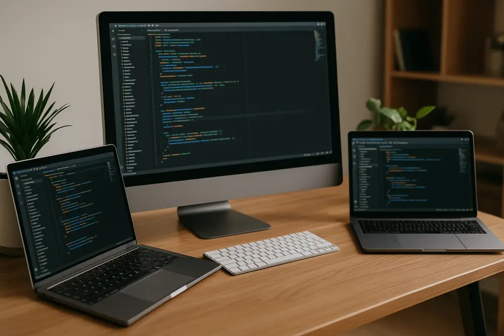
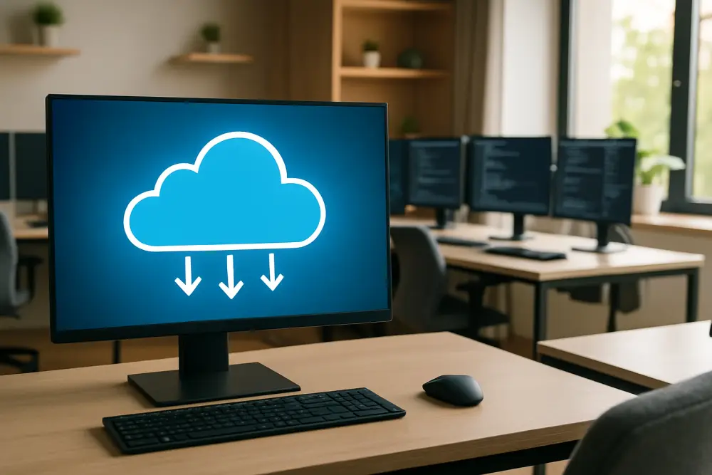
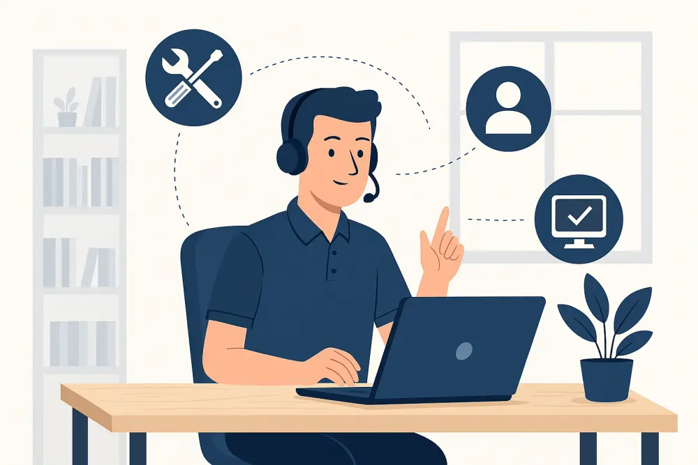
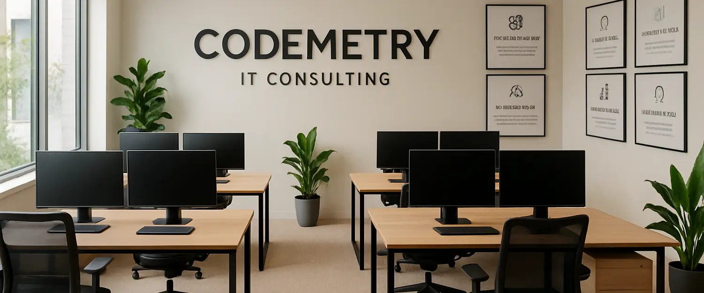

Consultora tecnológica · Sevilla
Tecnología que hace crecer tu empresa.
Codemetry es una consultora tecnológica especializada en soluciones digitales, infraestructura cloud, desarrollo a medida y ciberseguridad. Unimos precisión técnica y visión de negocio para que evoluciones con rapidez, seguridad y eficiencia.
- Desarrollo a medida
- Cloud
- Ciberseguridad
- Transformación digital
- Soporte IT
Qué hacemos
Cinco áreas, un solo equipo.
Todo lo que tu empresa necesita en tecnología, sin tener que coordinar a varios proveedores.

01Desarrollo a medida
Aplicaciones web y móviles, APIs y automatizaciones.
Ver más
02Infraestructura cloud
Migración a AWS, Azure o GCP.
Ver más- 03
Ciberseguridad
Análisis de vulnerabilidades, pentesting y cumplimiento normativo.
Ver más  04
04Transformación digital
Automatización de procesos y modernización de sistemas.
Ver más
05Soporte técnico empresarial
Gestión de redes, servidores y soporte remoto.
Ver más
Cómo trabajamos
De la idea a algo que funciona.
- 01
Diagnóstico
Escuchamos, revisamos tus sistemas y detectamos qué frena a tu empresa.
- 02
Plan
Te proponemos una hoja de ruta clara, por fases y con prioridades.
- 03
Ejecución
Desarrollamos, migramos y protegemos sin parar tu día a día.
- 04
Acompañamiento
Medimos, mantenemos y mejoramos de forma continua.

Nuestra casa
Un equipo cercano, en Sevilla.
Ocho personas que dominan cada pieza: desarrollo, sistemas, seguridad, soporte y marketing. Puedes venir a vernos o lo hacemos todo en remoto.
Conoce al equipo¿Empezamos?